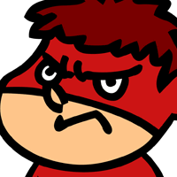
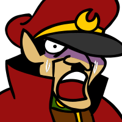

総統
なぜデラックスファイターが ここにいるんじゃ？


吉田
そういえば、ここに来る時に使った 転送装置の扉、うっかり締め忘れました。
総統
いつも玄関の鍵と異界の扉は ちゃんと閉めるよう言ってるじゃろ！
吉田
昔みたいに物で釣るっていうのは、 どうでしょうかね？
総統
今の我々は今月の家賃も ままならん状態じゃからのう…。
デラックスファイター
ハーッハッハッハッハッ！ 見つけたぞ鷹の爪団！
吉田
しかも、先ほどは気づきませんでしたが、 召喚師らしいのも連れているみたいですね。
デラックスファイター
というわけで、デラックス……！

総統
ま、待つんじゃ！
総統
ワシらはこのグランガイアを 征服しに来ておる。
総統
征服の暁には、お前のお気に入りの セレナの衣装をあらためて作ってやるぞ。
総統
そうじゃ…。ちゃんと 幻創進化バージョンも用意してやる。
総統
この世界と元の世界を行き来できるのは、 博士の装置だけじゃ。
グラデンス
ふむ…… あの男は向こう側についてしまったか…。
グラデンス
同じ世界の住人らしいから、 仕方あるまい。
グラデンス
結局、ワシとShou-chan、 ２人だけになってしまったが……。
グラデンス
ま、よいか。 最初からこの予定だったしの。
グラデンス
さて、そこのお主ら、 先に２人組の召喚師がここに来たはずじゃ。
グラデンス
そやつらの行方は知らんか？ お主らに倒されたとも思えんが……。
カル
ちょりーっす。 グラデンス爺さん、お久っす！
グラデンス
なんというか…… ２人とも珍妙な姿になったのう……。
セリア
気をつけてください。アイツら弱いくせに、 変な攻撃をしてきます…。
カル
そうっすよ、アイツらチョーヤベーっすよ。 チョヤバっすよ！！
グラデンス
…………カルよ、 今のお前はなんか腹立つから喋るな。
グラデンス
それがワシら召喚師の 心意気ってもんじゃあ！！
セリア
ちょ、待ってくださいグラデンス様！ もうちょっと落ち着いてください。
グラデンス
なんじゃあ、戦場で落ち着けというのは！ 貴様、それでもキ○タマ付いとんのか！？
グラデンス
敵が打って出た時は誘い込み、 囲み込んで撃滅！！
グラデンス
敵が退却した時は追撃して 一挙に殲滅！！
カル
スゲー！爺さんマジヤベエよ！ ハンパなくね？
セリア
…………も、もう勘弁して下さい、 グラデンス様。
吉田
強そうだった召喚師たちも、 しまね化させれば、まったく形無しですね。
吉田
この調子で、この世界をどんどん しまね化してやりましょう！
吉田
って、え！？ なんでコイツだけ変わらないんだ…？
総統
ど、どういうことじゃね、吉田くん。 この人だけ何も変わらないじゃないか！！
吉田
周りは完全にしまねになっているのに コイツにだけ効果がないなんて……。
吉田
コイツは画面の中に入ってこないから、 しまね化の効果がないんです！
総統
えええええ！？ 画面の中に入ってこないって、そんな……。
吉田
まったく、とんでもないシャイな あんちくしょうですよ！
セリア
アイツら一体何を訳が分からないことを 言ってるのかしら？
カル
あのピカっての食らって、何ともないなんて オレのダチ、さすがッスね～。
セリア
カル……。 今のアンタはちょっと黙ってて。
吉田
くそっ、こうなったら、 もう方法は１つしかありません。
総統
え～、戦う前から結果が見えてる気もするが それでもやるのかね…？
吉田
何を言ってるんですか！！ みんなやる気ですよ！
総統
なんじゃ？ なんでみんな、そんなにやる気なんじゃ？
吉田
今回のコラボは、 ブレフロ側のキャラたちも登場したので、
吉田
前回に比べて、我々の出番が ちょっと減っていたりしますからね。
総統
そういう事情なら仕方がない…。 ワシもやる気を出すとするかのう。
総統
みんな、ワシらの底力を、 この召喚師に見せてやるのじゃ！